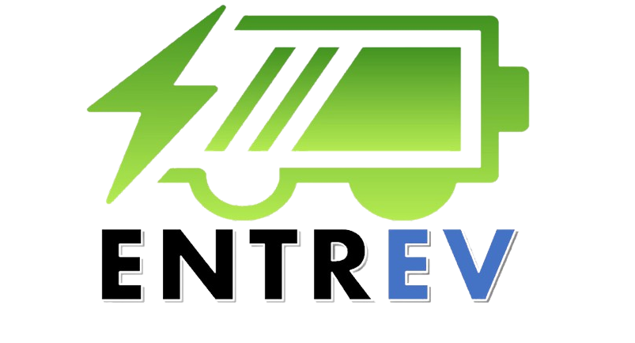
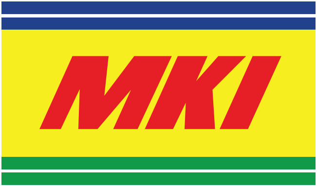
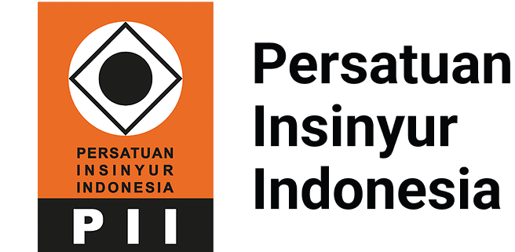

RICKY ZAKARIA PRASETYO
Social Media Strategist
& AI Tools Developer.
Bringing together content strategy, digital communication, and practical software development.
Ricky Zakaria Prasetyo — Social Media Strategist & AI Tools Developer.
TAP TO SWITCH · DRAG TO EXPLORE
01 / SELECTED WORK
Selected
work.
Stories and campaigns.
02 / ABOUT RICKY
About
me.
I’m Ricky, a social media and content strategist with over seven years of experience across brands, journalism, and digital campaigns.
I turn complex information into clear stories, lead creative execution, and use performance insights to shape better content.
I also develop AI-assisted tools and applications, combining communication experience with hands-on product development.
03 / EXPERIENCE
Work
experience.
Roles in communication, media and digital tools.
Satset Digital IndonesiaJUL 2026 — PRESENT
Satset Digital Indonesia
Freelance AI Engineer
Key responsibilities
- Developed applications and AI-assisted tools for marketplace reporting and customer-service practice.
- ProfitRex — organizes marketplace sales and cost reports.
- SAMPE — brings marketplace sales and activity data together.
- Bisa Closing — supports customer-service conversation practice.
Sorot IndonesiaMAY 2025 — PRESENT
Sorot Indonesia
Freelance Online Journalist
Key responsibilities
- Wrote and edited SEO-focused news under tight deadlines.
- Turned political, social, and economic sources into concise reports using 5W+1H principles.
- Managed the editorial workflow, including headlines and visual direction.
- Maintained accuracy and neutrality in sensitive coverage.
- Refined content and visuals using editorial feedback and performance insights.
AnantarupaJAN 2024 — PRESENT
PT Anantarupa Yaesa Suptesu Jagarti
Freelance Social Media Specialist
Key responsibilities
- Led daily content strategy across three digital brands.
- Produced gameplay videos and edited voice-overs.
- Hosted and managed TikTok and YouTube livestreams.
- Prepared daily, weekly, and monthly performance reports.
Selected achievements
- Increased community interaction by 40% within three months through engagement and live interaction.
Selawe LabsAPR 2026 — JUL 2026
Selawe Labs
Freelance AI Engineer
Key responsibilities
- CatatDuit — supports recording income and expenses.
- CatatDuit — provides summaries of recorded transactions.
Kindi PRMAY 2025 — MAR 2026
Kindi PR & Strategic Communication Consulting
Strategic Social Media & Content Specialist
Key responsibilities
- Led content and narrative strategy for national campaigns.
- Set creative and editorial standards through briefs for teams and KOLs.
- Validated data against official sources and translated policy and technical information into accessible content.
- Directed video storytelling and coordinated KOL and stakeholder collaborations.
- Designed automated WhatsApp responses for campaign inquiries.
- Integrated SEO into content planning and planned digital advertising initiatives.

ENTREV
MKIVhisomoMAY 2023 — DEC 2023
Vhisomo
Social Media Specialist
Key responsibilities
- Developed monthly editorial strategies for nine brands across industries.
- Built narratives for video reels and coordinated production using Asana.
- Presented weekly and monthly performance reports to clients.
- Developed paid content strategies across brand campaigns.
Selected achievements
- Increased post reach and engagement by up to 3× through paid content strategies.
Global Jet CargoNOV 2022 — FEB 2023
PT Global Jet Cargo
Social Media Specialist
Key responsibilities
- Planned and published content across five social platforms, with at least 15 posts per week.
- Coordinated content between regional offices and headquarters.
- Produced performance reports and recommendations.
- Supported TVC scripting and production.
Promo Literasi PrimaOCT 2019 — NOV 2022
PT Promo Literasi Prima
Social Media Strategist
Key responsibilities
- Led organic and paid social media strategy.
- Managed content calendars and performance tracking using Trello and analytics tools.
Selected achievements
- Grew total followers across platforms by more than 500,000.
- Achieved over one million weekly impressions through content planning.
- Executed campaigns reaching over eight million people and contributing to a reported 20% increase in CTR and conversion.

PII (Persatuan Insinyur Indonesia)MERAH PUTIHJUN 2018 — MAY 2019
Proyek MERAH PUTIH
Social Media Admin
Key responsibilities
- Managed daily social media operations.
- Monitored ongoing campaigns.
Selected achievements
- Maintained a 95% response rate to audience inquiries within 24 hours.
Infomedia NusantaraJUN 2017 — DEC 2017
Infomedia Nusantara by Telkom Indonesia
Technician Operator
Key responsibilities
- Maintained network systems.
- Troubleshot technical issues.
- Monitored network infrastructure.
04 / WHAT I BRING
Skills &
services.
Content strategy
Editorial direction
Community & campaigns
Reporting & analysis
Product framing
AI-assisted development
Workflow exploration
Prototyping & QA